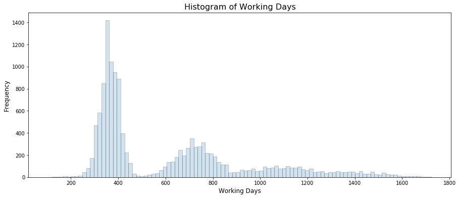

In this challenge, you have a dataset with info about the employees and have to predict when employees are going to quit by understanding the main drivers of employee churn.
import warnings
warnings.simplefilter('ignore')
import numpy as np
import pandas as pd
import seaborn as sns
import matplotlib.pyplot as plt
import graphviz
from sklearn import tree
from sklearn.tree import DecisionTreeClassifier
from sklearn.preprocessing import LabelEncoder
%matplotlib inlinedata = pd.read_csv('employee_retention.csv', parse_dates=['join_date', 'quit_date'])
data.head()| employee_id | company_id | dept | seniority | salary | join_date | quit_date | |
|---|---|---|---|---|---|---|---|
| 0 | 13021.0 | 7 | customer_service | 28 | 89000.0 | 2014-03-24 | 2015-10-30 |
| 1 | 825355.0 | 7 | marketing | 20 | 183000.0 | 2013-04-29 | 2014-04-04 |
| 2 | 927315.0 | 4 | marketing | 14 | 101000.0 | 2014-10-13 | NaT |
| 3 | 662910.0 | 7 | customer_service | 20 | 115000.0 | 2012-05-14 | 2013-06-07 |
| 4 | 256971.0 | 2 | data_science | 23 | 276000.0 | 2011-10-17 | 2014-08-22 |
data.info()<class 'pandas.core.frame.DataFrame'>
RangeIndex: 24702 entries, 0 to 24701
Data columns (total 7 columns):
employee_id 24702 non-null float64
company_id 24702 non-null int64
dept 24702 non-null object
seniority 24702 non-null int64
salary 24702 non-null float64
join_date 24702 non-null datetime64[ns]
quit_date 13510 non-null datetime64[ns]
dtypes: datetime64[ns](2), float64(2), int64(2), object(1)
memory usage: 1.3+ MBdata.describe()| employee_id | company_id | seniority | salary | |
|---|---|---|---|---|
| count | 24702.000000 | 24702.000000 | 24702.000000 | 24702.000000 |
| mean | 501604.403530 | 3.426969 | 14.127803 | 138183.345478 |
| std | 288909.026101 | 2.700011 | 8.089520 | 76058.184573 |
| min | 36.000000 | 1.000000 | 1.000000 | 17000.000000 |
| 25% | 250133.750000 | 1.000000 | 7.000000 | 79000.000000 |
| 50% | 500793.000000 | 2.000000 | 14.000000 | 123000.000000 |
| 75% | 753137.250000 | 5.000000 | 21.000000 | 187000.000000 |
| max | 999969.000000 | 12.000000 | 99.000000 | 408000.000000 |
# Null information
data.isnull().sum()employee_id 0
company_id 0
dept 0
seniority 0
salary 0
join_date 0
quit_date 11192
dtype: int64Create Table for day, employee_headcount, and company_id
# Define useful information
unique_date = pd.date_range(start='2011-01-24', end='2015-12-13', freq='D')
unique_company = sorted(data['company_id'].unique())day = []
company = []
headcount = []
# Loop through date and company id
for date in unique_date:
for idx in unique_company:
total_join = len(data[(data['join_date'] <= date) & (data['company_id'] == idx)])
total_quit = len(data[(data['quit_date'] <= date) & (data['company_id'] == idx)])
day.append(date)
company.append(idx)
headcount.append(total_join - total_quit)
# Create table for day, employee_headcount, company_id
table = pd.DataFrame({'day': day, 'company_id': company, 'employee_headcount': headcount},
columns=['day', 'company_id', 'employee_headcount'])table.head()| day | company_id | employee_headcount | |
|---|---|---|---|
| 0 | 2011-01-24 | 1 | 25 |
| 1 | 2011-01-24 | 2 | 17 |
| 2 | 2011-01-24 | 3 | 9 |
| 3 | 2011-01-24 | 4 | 12 |
| 4 | 2011-01-24 | 5 | 5 |
Employee Churn Analysis
# Separate stay and quit data
quit_data = data[~data['quit_date'].isnull()]
stay_data = data[data['quit_date'].isnull()]Feature Engineering
# Total working days
work_days = np.array(list(map(lambda x: x.days, quit_data['quit_date'] - quit_data['join_date'])))
hist_kws={'histtype': 'bar', 'edgecolor':'black', 'alpha': 0.2}
fig, ax = plt.subplots(figsize=(15, 6))
sns.distplot(work_days, bins=100, kde=False, ax=ax, hist_kws=hist_kws)
ax.set_title('Histogram of Working Days', fontsize=16)
ax.set_xlabel('Working Days', fontsize=12)
ax.set_ylabel('Frequency', fontsize=12)
plt.show()
there are peaks around each employee year anniversary
# Week No. for quiting
quit_week = np.array(list(map(lambda x: x.month, quit_data['quit_date'])))
fig, ax = plt.subplots(figsize=(15, 6))
sns.countplot(quit_week, ax=ax)
ax.set_title('Countplot of Quit Month', fontsize=16)
ax.set_xlabel('Month', fontsize=12)
ax.set_ylabel('Frequency', fontsize=12)
plt.show()# Week No. for quiting
weeks = np.array(list(map(lambda x: x.week, quit_data['quit_date'])))
hist_kws={'histtype': 'bar', 'edgecolor':'black', 'alpha': 0.2}
fig, ax = plt.subplots(figsize=(15, 6))
sns.distplot(weeks , bins=50, kde=False, ax=ax, hist_kws=hist_kws)
ax.set_title('Histogram of Quit Weeks', fontsize=16)
ax.set_xlabel('Quit Weeks', fontsize=12)
ax.set_ylabel('Frequency', fontsize=12)
plt.show()
And it also peaks around the new year. Makes sense, companies have much more money to hire at the beginning of the year. So our goal becomes to prevent employees to quit within 1 year.
Now, let’s see if we find the characteristics of the people who quit early. Looking at the histogram of employment_length, it looks like we could define early quitters as those people who quit within 1 yr or so.
So, let’s create two classes of users : quit within 13 months or not (if they haven’t been in the current company for at least 13 months, we remove them).
# Choose quit data
quit_data['work_days'] = work_days
quit_data['quit_week'] = quit_week
quit_data.head()| employee_id | company_id | dept | seniority | salary | join_date | quit_date | work_days | quit_week | |
|---|---|---|---|---|---|---|---|---|---|
| 0 | 13021.0 | 7 | customer_service | 28 | 89000.0 | 2014-03-24 | 2015-10-30 | 585 | 44 |
| 1 | 825355.0 | 7 | marketing | 20 | 183000.0 | 2013-04-29 | 2014-04-04 | 340 | 14 |
| 3 | 662910.0 | 7 | customer_service | 20 | 115000.0 | 2012-05-14 | 2013-06-07 | 389 | 23 |
| 4 | 256971.0 | 2 | data_science | 23 | 276000.0 | 2011-10-17 | 2014-08-22 | 1040 | 34 |
| 5 | 509529.0 | 4 | data_science | 14 | 165000.0 | 2012-01-30 | 2013-08-30 | 578 | 35 |
Decision Tree Model
# Choose the subset data
stop_date = pd.to_datetime('2015-12-13') - pd.DateOffset(days=365 + 31)
subset = data[data['join_date'] < stop_date]
# Binary label for early quit (less than 13 months)
quit = subset['quit_date'].isnull() | (subset['quit_date'] > subset['join_date'] + pd.DateOffset(days=396))
subset['quit'] = 1 - quit.astype(int)
subset.head()| employee_id | company_id | dept | seniority | salary | join_date | quit_date | quit | |
|---|---|---|---|---|---|---|---|---|
| 0 | 13021.0 | 7 | customer_service | 28 | 89000.0 | 2014-03-24 | 2015-10-30 | 0 |
| 1 | 825355.0 | 7 | marketing | 20 | 183000.0 | 2013-04-29 | 2014-04-04 | 1 |
| 2 | 927315.0 | 4 | marketing | 14 | 101000.0 | 2014-10-13 | NaT | 0 |
| 3 | 662910.0 | 7 | customer_service | 20 | 115000.0 | 2012-05-14 | 2013-06-07 | 1 |
| 4 | 256971.0 | 2 | data_science | 23 | 276000.0 | 2011-10-17 | 2014-08-22 | 0 |
# Label encoder
le = LabelEncoder()
train_x = subset[['company_id', 'seniority', 'salary']]
train_x['dept'] = le.fit_transform(subset['dept'])
train_y = subset['quit'].values
train_x.head()| company_id | seniority | salary | dept | |
|---|---|---|---|---|
| 0 | 7 | 28 | 89000.0 | 0 |
| 1 | 7 | 20 | 183000.0 | 4 |
| 2 | 4 | 14 | 101000.0 | 4 |
| 3 | 7 | 20 | 115000.0 | 0 |
| 4 | 2 | 23 | 276000.0 | 1 |
# Build decision tree
clf = DecisionTreeClassifier(max_depth=3, min_samples_leaf=30, random_state=42)
clf = clf.fit(X=train_x, y=train_y)# Visualization
features = list(train_x.columns)
targets = ['Not quit', 'Quit']
dot_data = tree.export_graphviz(clf, out_file=None, feature_names=features, class_names=targets,
filled=True, rounded=True, special_characters=True, )
graph = graphviz.Source(dot_data)
graph# Feature importance
importance = sorted(zip(features, clf.feature_importances_), key=lambda x:x[1], reverse=True)
for feature, val in importance:
print('{0:10s} | {1:.5f}'.format(feature, val))salary | 0.97439
seniority | 0.02561
company_id | 0.00000
dept | 0.00000# Visualization
hist_kws={'histtype': 'bar', 'edgecolor':'black', 'alpha': 0.2}
fig, ax = plt.subplots(figsize=(15, 7))
sns.distplot(subset[subset['quit']==0]['salary'],
label='Not Quit', ax=ax, hist_kws=hist_kws)
sns.distplot(subset[subset['quit']==1]['salary'],
label='Quit', ax=ax, hist_kws=hist_kws)
ax.set_xlabel('Salary', fontsize=12)
ax.set_ylabel('PDF', fontsize=12)
ax.legend()
plt.show()From this graph, people who make a lot of money and very little are not likely to quit. If salary between 80000 and 200000, the employee has higher probability of being an early quitter.
Other Factors
Given how important is salary, I would definitely love to have as a variable the salary the employee who quit was offered in the next job. Otherwise, things like: promotions or raises received during the employee tenure would be interesting.
The major findings are that employees quit at year anniversaries or at the beginning of the year. Both cases make sense. Even if you don’t like your current job, you often stay for 1 yr before quitting + you often get stocks after 1 yr so it makes sense to wait. Also, the beginning of the year is well known to be the best time to change job: companies are hiring more and you often want to stay until end of Dec to get the calendar year bonus.
Employees with low and high salaries are less likely to quit. Probably because employees with high salaries are happy there and employees with low salaries are not that marketable, so they have a hard time finding a new job.